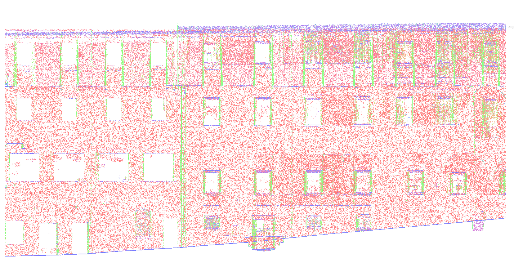
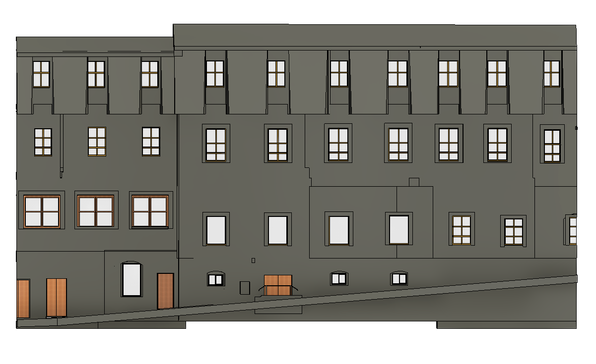

SCAN TO BIM
Point cloud to accurate Revit models with disciplined geometry and documentation.
We turn existing buildings, drawings and point clouds into accurate, information-rich Revit models.
From laser scans and point clouds to coordinated BIM, our workflow is built for teams that need dependable digital information, not just geometry.
Drag the divider. This is the kind of transformation we deliver.


A cinematic look at our Revit workflow — geometry, space and information working together.
Flexible production support for architects, surveyors, contractors and BIM teams.
Point cloud to accurate Revit models with disciplined geometry and documentation.
Legacy drawings transformed into structured, editable BIM information.
Architectural, Structural and MEP modeling from concept through high-detail delivery.
Federated models, coordination support and clash-focused BIM workflows.
High-detail Scan to BIM delivery developed from existing survey information, with a focus on model accuracy and usable project data.
Point cloud, CAD, drawings or existing model.
Validate references, coordinates and project scope.
Build disciplined Revit geometry and information.
Review, coordinate and deliver the agreed package.
Have a point cloud, CAD set or BIM requirement? Tell us what you need.